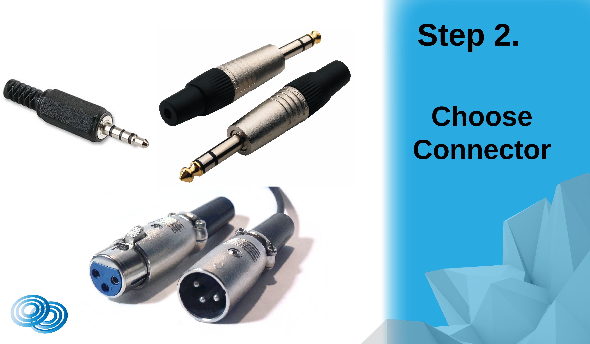
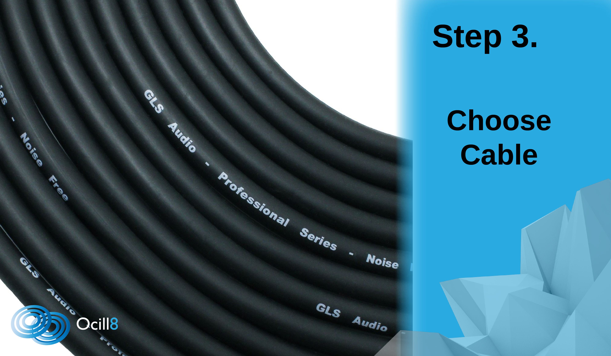
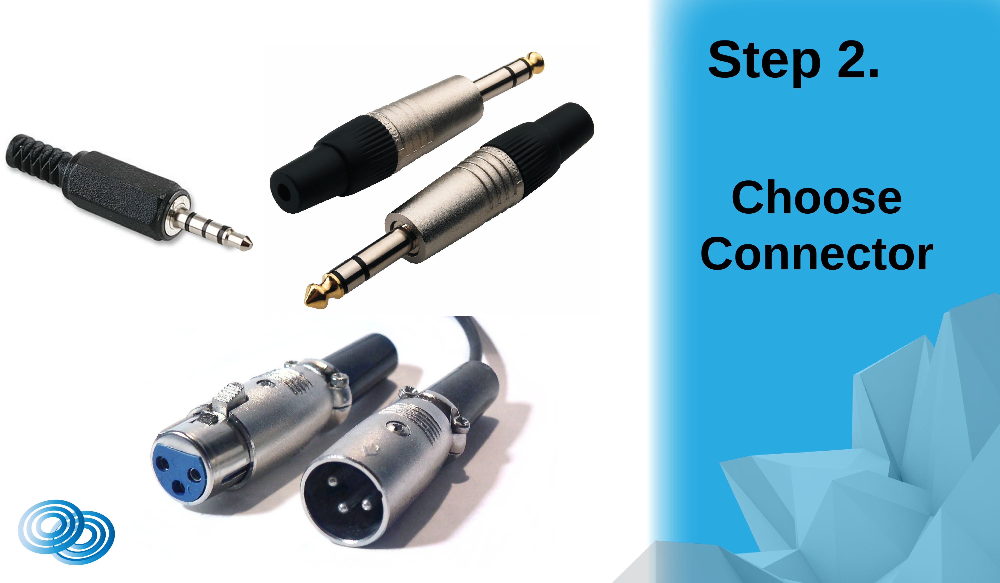
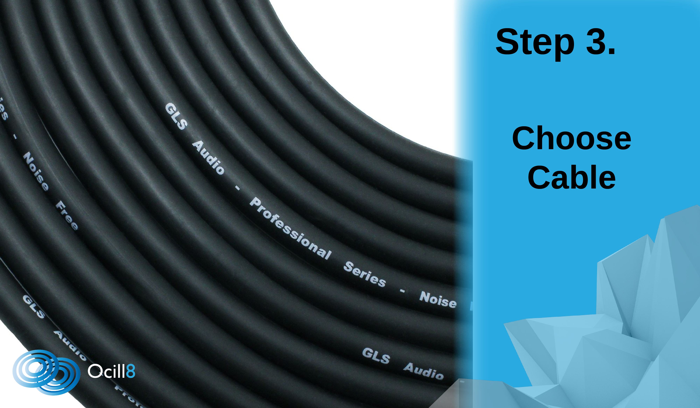

Home
Welcome to our page...
At ocill8 we ensure our customers are given informed knowledge from experienced users regarding the products we sell. Our contact mics can be applied to wide variety of applications whether it be field recording, experimental performance, foley recording, DJ sampling and much more. Contact mics open the door to countless experiments into the world of sound and at Ocill8 it is our pleasure to provide you with this key.
 


